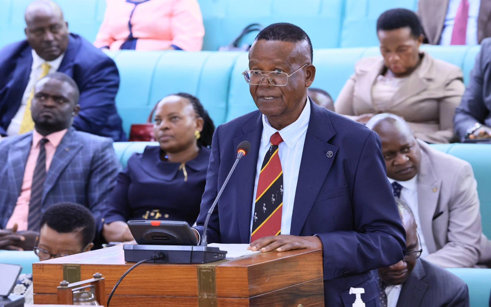

Uganda Minister Assures Parliament Suspects Will Be Held in Official Detention Facilities

Uganda's Minister of Internal Affairs, Professor Ephraim Kamuntu, has told Parliament that suspects arrested by security agencies must be held in gazetted detention facilities and processed according to the law. His statement comes amid parliamentary concerns over reported arrests and alleged detentions in undisclosed locations.
What the Minister told Parliament
On Wednesday, 4 November 2026, Professor Kamuntu presented a statement on security incidents in different parts of Uganda. He said suspects arrested by any security agency should be detained in officially gazetted places and handled in accordance with the law.
The minister referred to constitutional protections under Articles 23 and 28, which address personal liberty and safeguards relating to arrest, detention and trial.
He also said the Uganda Police Force would work with the Office of the Director of Public Prosecutions and the Judiciary to expedite murder trials.
Watch the Parliamentary Sitting
Watch the Parliament of Uganda sitting of 4 November 2026, during which Minister Ephraim Kamuntu presented his statement.
Video source: Parliament of Uganda, official YouTube channel.
Opposition MPs demand accountability
The statement followed concerns raised in Parliament about reports of people being arrested and allegedly held in facilities that are not officially recognised.
Leader of the Opposition Joel Ssenyonyi welcomed the minister's commitment to gazetted detention facilities but argued that government must also address reports of people already being held in unauthorised locations.
Opposition Chief Whip Paul Mwiru had earlier asked government to explain the reported arrests and disclose where affected individuals were being held.
These are concerns and allegations raised by lawmakers. They should not be treated as independently established facts without further verification.
Community policing and funding concerns
Kamuntu also outlined plans to strengthen community policing, including increased police presence, motorcycles, communication facilities and rapid response at sub-county level.
Shadow Minister of Internal Affairs Denes Sekabira questioned whether the programme had sufficient funding. He told Parliament that Shs50 billion had been allocated against a projected requirement of Shs249 billion.
Why the issue matters
Lawful detention is an important part of protecting individual rights and maintaining public confidence in security institutions. People who are arrested should be handled through recognised legal procedures, and their families should be able to obtain information through appropriate lawful channels.
The minister's commitment is an important statement of government policy. However, Parliament's concerns also highlight the need for transparency, accountability and clear evidence that the directive is being implemented.
What happens next?
Public attention will now focus on whether security agencies consistently follow the directive, whether concerns raised by MPs receive clear answers, and whether the proposed community policing programme receives the resources needed to operate.
Vivitek will continue following developments and reporting verified updates as more information becomes available.